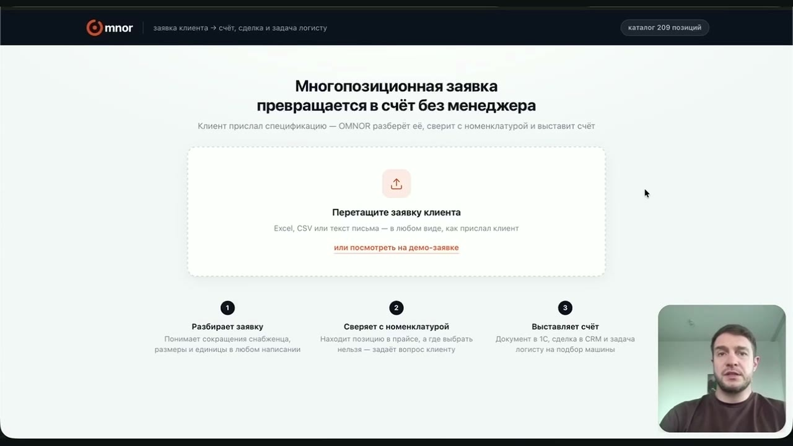

Руками на это уходит от получаса до часа, а на больших заявках и дольше. OMNOR проходит путь сам: читает заявку, сверяет каждую строку с вашей номенклатурой, выставляет счёт в 1С, заводит сделку в CRM и ставит задачу логисту.

Снабженец рассылает одну и ту же заявку сразу нескольким поставщикам. Пока ваш менеджер разбирает файл и ищет позиции в базе, конкурент уже прислал счёт, созвонился с ЛПР и, возможно, закрыл сделку.
Что в это время делает ваш менеджер
«Пришлите список необходимых материалов — подготовим расчёт в течение двух часов». Так пишут на сайтах оптовых поставщиков. Два часа — нормальный срок, если заявка пришла только вам. Но она ушла ещё нескольким, и пока вы считаете, снабженец уже читает чужой счёт.
Сначала мы загружаем вашу номенклатуру из 1С — артикулы, единицы измерения и виды цен. Дальше он работает внутри вашей номенклатуры: подбирает из неё и запоминает сопоставления, которые вы подтвердили.
Одна заявка на входе — готовая сделка на выходе. Менеджеру остаётся прочитать и отправить.
Прежде чем что-то обсуждать, мы показываем результат. Пришлите одну обезличенную заявку и выгрузку прайса — вернём разбор: какие позиции сопоставились, по каким OMNOR задал вопрос, чего в прайсе не нашлось.
Это бесплатно. По одному такому разбору видно больше, чем по любой презентации.
Где работает: по умолчанию подключаемся к вашей 1С и CRM, ставить ничего не нужно. Если по требованиям безопасности данные не должны покидать компанию, OMNOR разворачивается на вашем оборудовании — нужен отдельный сервер, например NVIDIA DGX Spark.
Обещать умеет каждый. Пришлите одну обезличенную заявку и выгрузку прайса из 1С — верну разбор и готовый счёт. Увидите на своих позициях, что сопоставилось, где OMNOR задал вопрос и чего у вас в прайсе нет.
Бесплатно и ни к чему не обязывает. Файл удобнее прислать в Telegram или почтой — после разговора.
Свяжусь сегодня. Не хотите ждать —